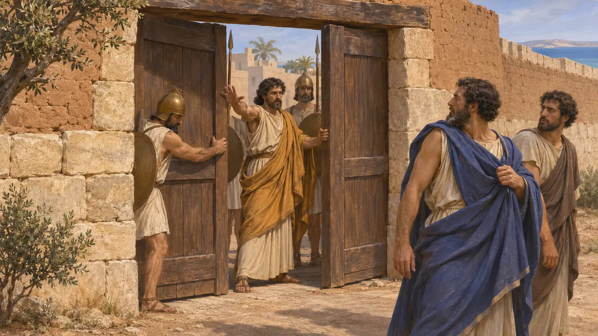
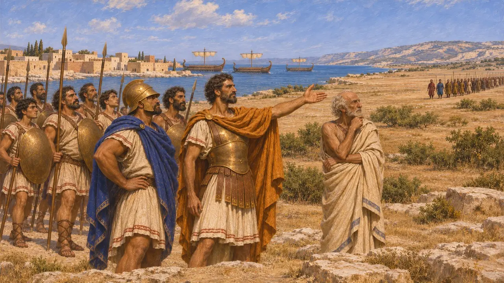
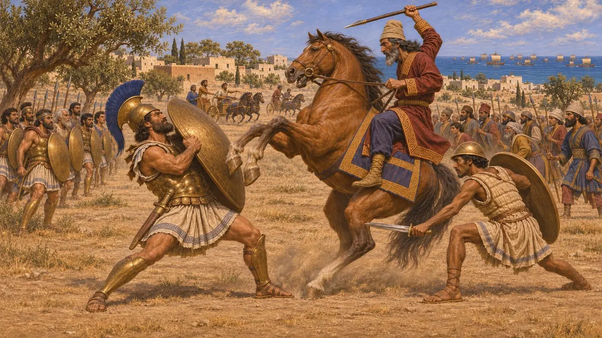
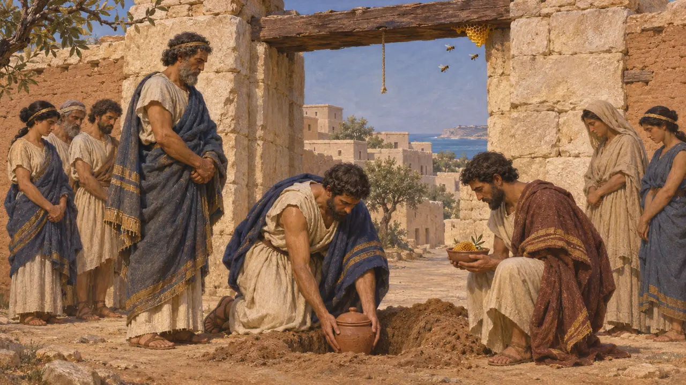
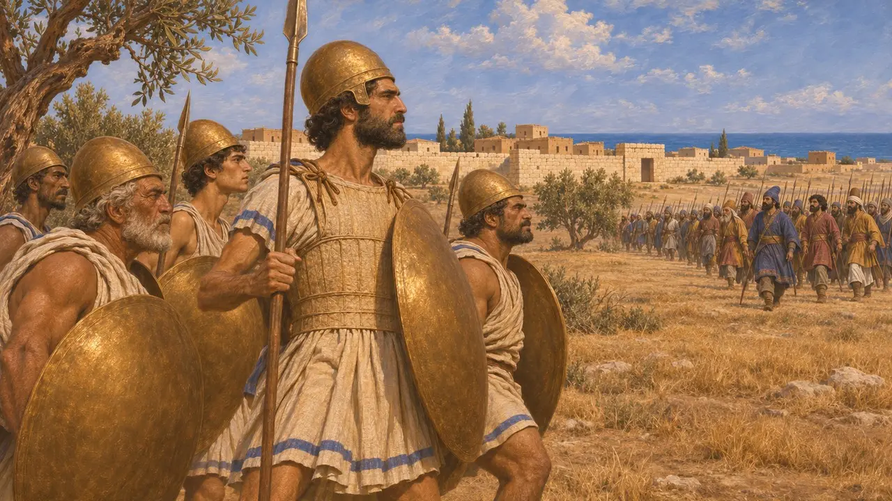

Онесил Саламинский
Киприотский предводитель восстания на Кипре, погиб в битве близ Саламина около 497 г. до н. э.
Онесил был младшим братом Горга, царя кипрского Саламина, и именно он вовлёк города острова в Ионийское восстание. Главный источник о нём — Геродот. Восстание длилось около года: затем персидские войска разбили киприотов на суше, а ионийский флот ушёл домой.
В игре: Игра упоминает Онесила только в статьях о событиях, главным образом о восстании Кипра. У него нет ни собственной фигуры, ни уровня, ни механики.

Брат царя Саламина
Античное свидетельствоГеродот сообщает, что Онесил был сыном Херсиса и братом Горга, царя Саламина на Кипре. Он часто убеждал Горга поднять мятеж, а когда тот отказался, закрыл перед ним ворота города и захватил власть. Горг бежал к мидянам, как Геродот называет персов.
Herodotus 5.104

Восстание на Кипре
Античное свидетельствоГеродот сообщает, что Онесил убедил восстать все города киприотов, кроме Аматунта, и осадил Аматунт. Затем на остров переправилось персидское войско, и на помощь прибыл ионийский флот. Вожди киприотов решили встретить персов на суше, а море оставить ионийцам.
Herodotus 5.104-109

Битва перед Саламином
Античное свидетельствоГеродот пишет, что ионийцы выиграли морское сражение. На суше Онесил встретился с персидским военачальником Артибием, чей конь был приучен вставать на дыбы против гоплитов, и карийский щитоносец Онесила подсёк коня. Геродот добавляет, что курийцы перешли на сторону персов, саламинские колесницы последовали за ними, а Онесил пал вместе с Аристокипром, царём Соли.
Herodotus 5.110-113

После его смерти
Античное свидетельствоГеродот сообщает, что амафунтяне отрубили Онесилу голову, отнесли её в Амафунт и повесили над своими воротами. Голова наполнилась пчёлами, и оракул велел им похоронить её и ежегодно чтить Онесила как героя. Остальное Геродот приводит как конец восстания: персы одного за другим вернули себе кипрские города, и Кипр снова был порабощён после года свободы.
Herodotus 5.114-116

Что известно, а что нет
СпорныйНи один персидский или кипрский текст того времени не называет Онесила, поэтому рассказ о нём опирается на Геродота. Историки признают восстание на Кипре реальным, но такие подробности, как поединок коней и пчёлы, вероятно, отчасти порождены рассказчиками. Дата, около 497 г. до н. э., выведена из последовательности событий Ионийского восстания.
P. Briant, From Cyrus to Alexander, 2002
Источники
- Herodotus 5.104-116
- P. Briant, From Cyrus to Alexander, 2002